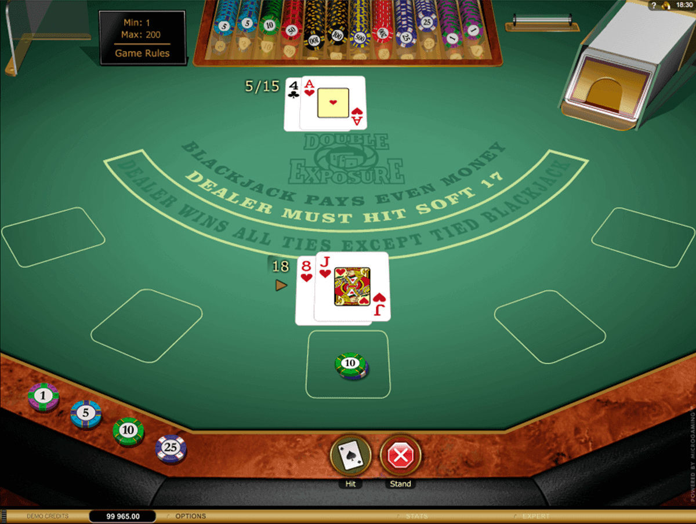

Quality is not optional
Why it is ok to drop features
With some practical examples in JavaScriptMe
Web Engineer since early 200x
❤️ JavaScript & Python
Working @ enercast
Goal
We want to build value for our customer.
🤔
But what exactly is value?
Value
💰 Something the customer is willing to pay for
💪 Something he is changing his behavior for
Developer's Triangle

Choose Two
Quality
external: what the customer perceives and uses
internal: what the engineer builds and maintains
Professional Engineering

Internal Quality as a dependency
This is not negotiable
Is high quality expensive?
In software, slow is fast. Without proper quality process, you'll spend more time putting out fires than building new value.
— Eric Elliott (@_ericelliott) June 25, 2019
🤜 🤛
We need high performing teams
Why Cutting Costs is Expensive: How $9/Hour Software Engineers Cost Boeing Billions
What makes a team awesome?
Security
Respect
Focus
Collaboration
Agility
How to be agile?
Don't follow agile processes blindly
Instead understand their purpose
Cut big stories small
Create vertical stories
Build cross-functional teams
Mob Programming

Source: A day of Mob Programming 2016
Blackjack in 60 Minutes
Value =
Performing agile
Producing Quality
Treating each other with respect
Brainstorming
How to increase quality without
wasting too much time?
🛠️
Unit Tests

Jest, Karma
Integration Tests

Puppeteer, Cypress.io, TestCafé
Code Linting

ESLint, Prettier
Type Checking

TypeScript, Flow
Git hooks

Husky
Code Review

Documentation
Storybook, Docz
Continuous Integration/Deployment

Jenkins, CircleCI, Gitlab CI
Quality is not optional
Focus on building value, not features. Sometimes fewer features represents better value.
— Eric Elliott (@_ericelliott) June 25, 2019